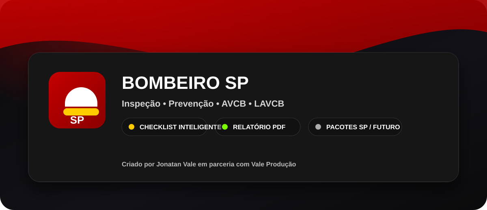

Valor comercial imediato
Mostre rapidamente o valor da inspeção, da proposta e das adequações para o cliente.

Agora o app entrega fluxo completo de pré-vistoria com geolocalização, painel técnico avançado, mapa da vistoria, QR verificável, PDF profissional e operação offline robusta.
Mostre rapidamente o valor da inspeção, da proposta e das adequações para o cliente.
Identifique risco, urgência e escopo de adequação para vender com mais segurança.
Aplicativo preparado para uso em campo, demonstração comercial e entrega ao contratante.
Estas vistorias ficam salvas no seu aparelho (IndexedDB).
—
Use o botão abaixo para imprimir ou salvar como PDF profissional com QR verificável e mapa da vistoria.